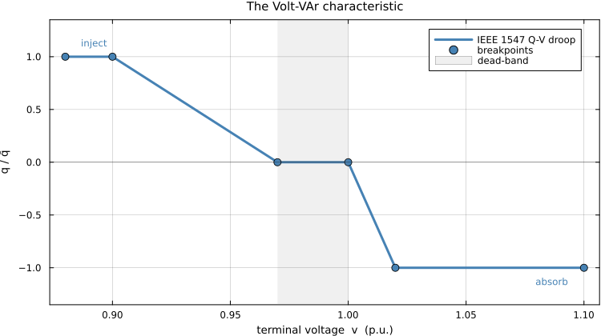
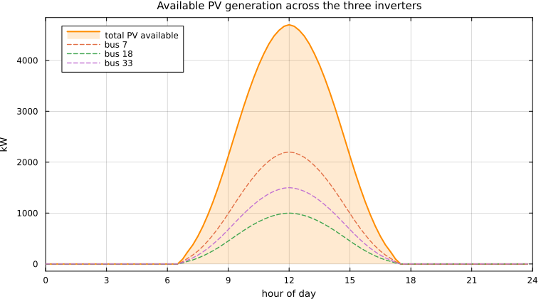
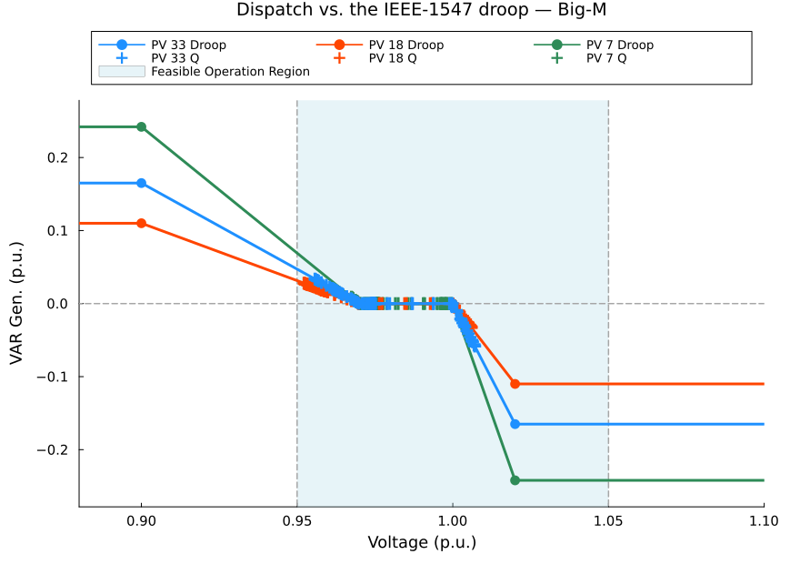
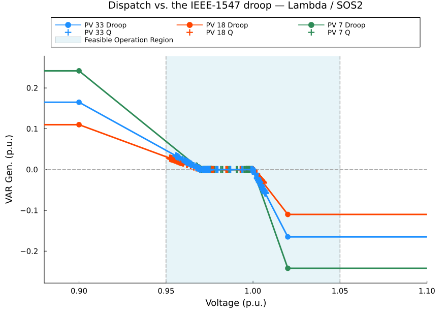
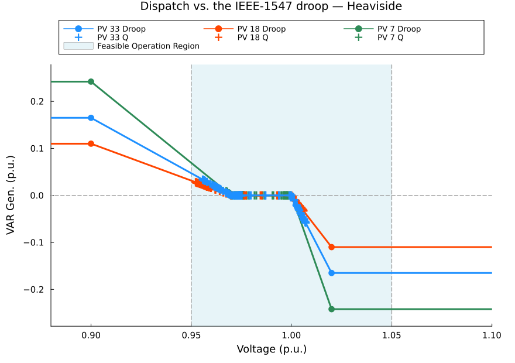
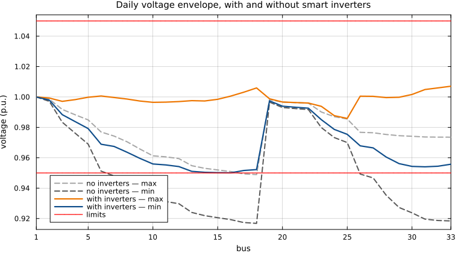
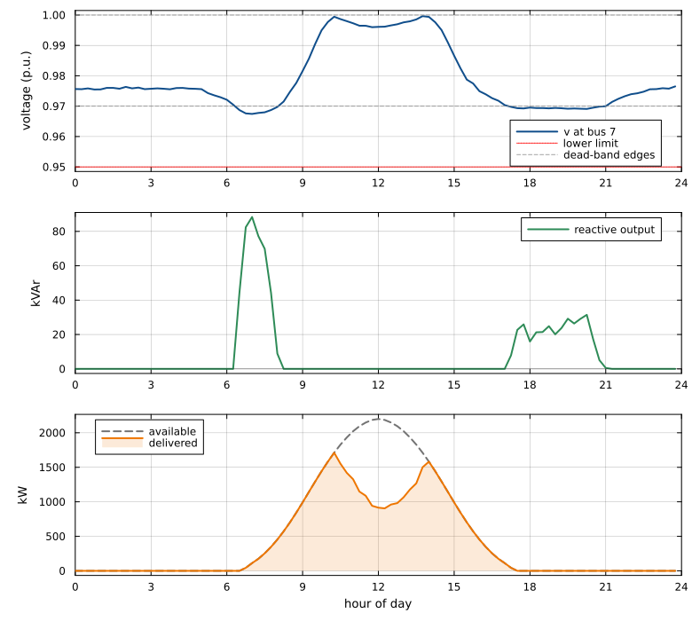

Embedding the Volt-VAr droop into a distribution OPF
Rahmat Emami Mirak
A smart inverter does not accept a reactive-power set-point. It follows a Volt-VAr curve: it measures its own terminal voltage and decides, on its own, how much reactive power to inject or absorb. An optimal power flow that ignores that curve will happily return a reactive dispatch the inverter is never going to deliver.
This tutorial shows three ways to put the curve inside the optimisation, so that every dispatch point the solver returns is one the inverter would actually produce. All three are exact — none of them approximates the curve — and on the case study below all three return the same answer. What separates them is the solver technology they demand and how they scale.
Prerequisites
Julia with JuMP, a mathematical-programming solver, and this package. Two of the three methods produce a mixed-integer linear program and need an MILP solver; the third produces a nonlinear program and needs an NLP solver.
using Pkg
Pkg.add(["JuMP", "Gurobi", "Ipopt"])
Pkg.add(url = "https://github.com/ra-emami/SmartInverterDOPF.jl")The results on this page were produced with Gurobi (MILP) and Ipopt (NLP), and that is not an incidental choice. Of the three MILP solvers tried, only Gurobi completes the successive-linearisation loop on this case — the two open-source ones fail, in two different ways, and the section below reports exactly how.
Gurobi is commercial software, but it is free for academic use. The Gurobi academic program offers a Named-User License (runs locally, no constant internet connection), a Web License Service (WLS) licence usable from any internet-connected machine including containers and cloud runners, and a Site License for a department or whole university. All three are free to students, faculty and staff at accredited degree-granting institutions for non-commercial teaching and research; the named-user licence runs up to a year and is renewable while eligibility holds, and recent graduates can keep access through the "Take Gurobi with You" programme.
If no MILP licence is available at all, the :heaviside encoding needs only Ipopt, which is open source — and as the comparison below shows, it reaches the same answer. That is a practical reason to care about an integer-free formulation, quite apart from the theory.
What each MILP solver actually does
The two MILP encodings were run under Gurobi, HiGHS and GLPK by scripts/solver_benchmark.jl. Gurobi goes first and sets the reference time. Each open-source solver is then given a budget of 20× the total time Gurobi needed for the same encoding, and is withdrawn if it cannot finish inside it — a solver that needs twenty times the reference to do the same work is not a usable substitute here, and leaving it running would not change that.
| solver | encoding | outcome | time (s) | budget (s) | what happened |
|---|---|---|---|---|---|
| Gurobi | Big-M | completed | 19.2 | — | converged in 4 passes, proven optimal |
| HiGHS | Big-M | failed | 62.8 | 383 | INFEASIBLE on pass 2 |
| GLPK | Big-M | withdrawn | 441.4 | 383 | still on pass 1 when the budget ran out |
| Gurobi | Lambda / SOS2 | completed | 15.9 | — | converged in 6 passes, proven optimal |
| HiGHS | Lambda / SOS2 | failed | 136.9 | 317 | INFEASIBLE on pass 2 |
| GLPK | Lambda / SOS2 | withdrawn | 375.7 | 317 | still on pass 1 when the budget ran out |
Two quite different failure modes, and neither is a defect in the solver:
- HiGHS fails fast. It solves the first pass, then reports
INFEASIBLEon the second, for both encodings, well inside its budget. The model is not infeasible — Gurobi solves the same sequence to proven optimality, and earlier runs reproduced the HiGHS failure at every MIP gap tried from $10^{-3}$ down to $0$. The likely cause is that the two solvers return different optimal solutions to the first subproblem, which sends the linearisation down different trajectories; one of them lands on a subproblem that is genuinely infeasible. That is a fragility of the successive-linearisation scheme, not of either solver, and it is worth knowing about before building on it. - GLPK does not fail — it simply does not finish. It never reaches a second pass: it is still working on the first MILP when the budget expires, having already spent more time than Gurobi needs for the entire loop. GLPK has no parallel branch-and-cut and none of the modern cut families, and at roughly 43 000 variables with 1440 binaries per pass that gap is decisive. Both encodings are therefore withdrawn under the 20× rule rather than reported with a number.
The honest summary is that these MILPs are large enough to separate a commercial branch-and-cut implementation from the open-source ones, and the tutorial reports that rather than quietly picking whichever solver happened to work.
Why the curve has to live inside the OPF
IEEE 1547-2018 requires every interconnecting distributed energy resource to be capable of Volt-VAr control. The utility enables the function and sets the curve; the inverter then runs it autonomously as a local feedback law. An advanced distribution management system can coordinate hundreds of these inverters through a distribution OPF — but only if the OPF knows the law each one is following.
Leave the curve out and the OPF treats $q_i^G$ as a free decision variable inside the inverter's apparent-power circle. It will pick whatever value minimises the objective. The inverter, meanwhile, is looking at its own terminal voltage and producing something else entirely. The dispatch is not merely suboptimal; it is not physically realisable.
Put the curve in, and the feasible set shrinks to exactly the points the fleet can actually reach. As a bonus, once the curve is an algebraic object inside the model, its breakpoints can themselves become decision variables — which is how droop curves get optimised rather than merely respected.
The IEEE 1547 Volt-VAr law
The curve is piecewise linear in five segments, defined by six breakpoint voltages $V^{\text{bp}}_1 \le \dots \le V^{\text{bp}}_6$ and the reactive set-point at each. Writing $\bar q_i$ for the reactive capability of inverter $i$:
\[q_i(v_i) \;=\; \begin{cases} \bar q_i, & V^{\text{bp}}_1 \le v_i \le V^{\text{bp}}_2 \quad\text{(full injection)}\\[4pt] \bar q_i \dfrac{V^{\text{bp}}_3 - v_i}{V^{\text{bp}}_3 - V^{\text{bp}}_2}, & V^{\text{bp}}_2 \le v_i \le V^{\text{bp}}_3 \quad\text{(sloped)}\\[6pt] 0, & V^{\text{bp}}_3 \le v_i \le V^{\text{bp}}_4 \quad\text{(dead-band)}\\[4pt] -\bar q_i \dfrac{v_i - V^{\text{bp}}_4}{V^{\text{bp}}_5 - V^{\text{bp}}_4}, & V^{\text{bp}}_4 \le v_i \le V^{\text{bp}}_5 \quad\text{(sloped)}\\[6pt] -\bar q_i, & V^{\text{bp}}_5 \le v_i \le V^{\text{bp}}_6 \quad\text{(full absorption)} \end{cases}\]
Low voltage means inject reactive power to hold the voltage up; high voltage means absorb it. Between the two sits a dead-band in which the inverter does nothing, so that small fluctuations do not provoke needless reactive flow.
Vbp, qshape = collect(Float64, case.Vbp), collect(Float64, case.qshape)
plot(Vbp, qshape, lw = 3, color = :steelblue, label = "IEEE 1547 Q-V droop",
xlabel = "terminal voltage v (p.u.)", ylabel = "q / q̄",
title = "The Volt-VAr characteristic", ylims = (-1.35, 1.35), legend = :topright)
scatter!(Vbp, qshape, ms = 5, color = :steelblue, label = "breakpoints")
vspan!([Vbp[3], Vbp[4]], color = :grey, alpha = 0.12, label = "dead-band")
hline!([0], color = :black, lw = 0.6, alpha = 0.5, label = false)
annotate!([(Vbp[1] + 0.007, 1.13, text("inject", 8, :left, :steelblue)),
(Vbp[6] - 0.007, -1.13, text("absorb", 8, :right, :steelblue))])
The curve used throughout this tutorial is the package default:
| $V^{\text{bp}}_1$ | $V^{\text{bp}}_2$ | $V^{\text{bp}}_3$ | $V^{\text{bp}}_4$ | $V^{\text{bp}}_5$ | $V^{\text{bp}}_6$ | |
|---|---|---|---|---|---|---|
| voltage (p.u.) | 0.88 | 0.90 | 0.97 | 1.00 | 1.02 | 1.10 |
| $q/\bar q$ | 1 | 1 | 0 | 0 | -1 | -1 |
Why an "if-else" cannot go straight into a solver
The law above is a definition by cases, and that is exactly what a solver cannot read. Two distinct obstacles follow.
Conditional logic. Which of the five expressions applies depends on $v_i$, which is itself a decision variable. Branching on the value of an unknown is not an algebraic constraint, and an algebraic constraint is the only thing a solver accepts.
Non-differentiability. Even setting the branching aside, the slope jumps at every breakpoint. Newton and interior-point methods build their steps from derivatives, and at a kink the derivative does not exist.
There are two ways out, and they define the rest of this tutorial:
- Introduce integer variables to encode the logic exactly. The model becomes an MILP. This is the Big-M and Lambda/SOS2 route.
- Write the logic in closed algebraic form using step functions. The model stays integer-free but becomes non-smooth, so it needs an NLP solver. This is the Heaviside route.
The host model
The droop is a self-contained module. Whatever distribution OPF you use, it exposes a voltage magnitude at each inverter bus; the droop module adds the relationship tying that inverter's reactive output to that voltage:
┌────────────────────────────┐
│ DOPF │
│ network model + limits │
└───────┬────────────▲───────┘
exposes│ vᵢ qᵢᴳ│ sets
┌───────▼────────────┴───────┐
│ Q-V droop module │
│ the IEEE 1547 curve │
└────────────────────────────┘Nothing in the three encodings below depends on the host. They work equally with LinDistFlow, a current-voltage AC-OPF, an unbalanced three-phase AC-OPF, or a full nonlinear AC-OPF — they only require that the host expose $v_i$ at each inverter bus.
The host used here is a current-voltage AC optimal power flow (IVACOPF), in which the network is written in rectangular current and voltage coordinates. Ohm's law and KCL are then exactly linear. Two things remain bilinear — the $v \cdot I$ power balance and the $|I|^2$ branch loss — and these are handled by successive linearisation: each is expanded about the previous iterate and the model is re-solved until the residual of the exact loss identity falls below a tolerance. Convergence is checked against the true nonlinear relation, not the linearised one, so the converged point satisfies the real power flow.
The setup
The IEEE 33-bus radial feeder, over a full day at 15-minute resolution — 96 time steps. Three PV systems with smart inverters sit at buses 7, 18 and 33. Loads follow separate industrial, commercial and residential shapes; PV follows a clear-sky irradiance profile.
| bus | PV rating (kW) | inverter rating (kVA) | reactive capability $\bar q$ (kVAr) |
|---|---|---|---|
| 7 | 2200 | 2420 | 2420 |
| 18 | 1000 | 1100 | 1100 |
| 33 | 1500 | 1650 | 1650 |
Each inverter is rated 10 % above its PV array, so there is headroom for reactive support even at full irradiance. Bus voltages are limited to $[$ $$ $0.95, 1.05$ $]$ p.u., and the objective is to minimise total PV curtailment over the day.
avail = [collect(Float64, a) for a in case.avail_kW]
plot(hours, sum(avail), lw = 2, color = :darkorange, fillrange = 0, fillalpha = 0.18,
label = "total PV available", xlabel = "hour of day", ylabel = "kW",
title = "Available PV generation across the three inverters",
xticks = 0:3:24, xlims = (0, 24), legend = :topleft)
for (i, b) in enumerate(case.DG_SET)
plot!(hours, avail[i], lw = 1.4, ls = :dash, label = "bus $b")
end
plot!()
Why does a curtailment objective have anything to do with voltage at all? Because the droop ties the two together. Active power injection raises the local voltage; the droop reads that voltage and sets reactive power accordingly; and reactive flow moves voltages across the whole feeder. The optimiser wants every kilowatt it can get — the droop decides what taking it costs everywhere else.
Method A — Big-M
Introduce a binary $\delta_{b}$ for each of the five segments, exactly one of which is active:
\[\sum_{b=1}^{5}\delta_{b}=1 .\]
Each binary must switch on its own voltage window. For a segment $b$ spanning $[V^{\text{bp}}_{b}, V^{\text{bp}}_{b+1}]$, the pair
\[v_i \;\ge\; V^{\text{bp}}_{b} - M\,(1-\delta_{b}), \qquad v_i \;\le\; V^{\text{bp}}_{b+1} + M\,(1-\delta_{b})\]
is vacuous when $\delta_b = 0$ and binding when $\delta_b = 1$.
The sloped segments need one more step. Their law involves the product $\delta_b v_i$ of a binary and a continuous variable, which is bilinear. Because $\delta_b$ is binary and $v_i$ is bounded, that product is linearised exactly by an auxiliary variable $W_b := \delta_b v_i$:
\[-M(1-\delta_b) \;\le\; v_i - W_b \;\le\; M(1-\delta_b), \qquad V^{\text{bp}}_{b}\,\delta_b \;\le\; W_b \;\le\; V^{\text{bp}}_{b+1}\,\delta_b .\]
The second pair doubles as the voltage window, so no separate window constraint is needed for sloped segments. The droop law is then a single linear equation in which every coefficient is a constant:
\[q_i^G = \delta_1\bar q_i + \alpha_1 W_2 + \delta_2\frac{\bar q_i V^{\text{bp}}_3}{V^{\text{bp}}_3 - V^{\text{bp}}_2} + \alpha_2 W_4 + \delta_4\frac{\bar q_i V^{\text{bp}}_4}{V^{\text{bp}}_5 - V^{\text{bp}}_4} - \delta_5\bar q_i ,\]
with slopes $\alpha_1 = -\bar q_i/(V^{\text{bp}}_3-V^{\text{bp}}_2)$ and $\alpha_2 = -\bar q_i/(V^{\text{bp}}_5-V^{\text{bp}}_4)$.
In JuMP:
@variable(model, δ[1:5, DG_SET, HOUR_SET, QUARTER_SET], Bin)
@variable(model, W2[DG_SET, HOUR_SET, QUARTER_SET])
@variable(model, W4[DG_SET, HOUR_SET, QUARTER_SET])
@constraint(model, [d in DG_SET, h in HOUR_SET, m in QUARTER_SET],
sum(δ[i, d, h, m] for i in 1:5) == 1)
# flat segments 1, 3, 5 — the binary only switches on a voltage window
for (i, lo, hi) in ((1, 1, 2), (3, 3, 4), (5, 5, 6))
@constraint(model, [d in DG_SET, h in HOUR_SET, m in QUARTER_SET],
v[d, h, m] >= Vbp[lo] - Mbig * (1 - δ[i, d, h, m]))
@constraint(model, [d in DG_SET, h in HOUR_SET, m in QUARTER_SET],
v[d, h, m] <= Vbp[hi] + Mbig * (1 - δ[i, d, h, m]))
end
# sloped segments 2 and 4 — W = δ·v, whose bounds double as the window
for (i, W, lo, hi) in ((2, W2, 2, 3), (4, W4, 4, 5))
@constraint(model, [d in DG_SET, h in HOUR_SET, m in QUARTER_SET],
v[d, h, m] - W[d, h, m] >= -Mbig * (1 - δ[i, d, h, m]))
@constraint(model, [d in DG_SET, h in HOUR_SET, m in QUARTER_SET],
v[d, h, m] - W[d, h, m] <= Mbig * (1 - δ[i, d, h, m]))
@constraint(model, [d in DG_SET, h in HOUR_SET, m in QUARTER_SET],
W[d, h, m] >= Vbp[lo] * δ[i, d, h, m])
@constraint(model, [d in DG_SET, h in HOUR_SET, m in QUARTER_SET],
W[d, h, m] <= Vbp[hi] * δ[i, d, h, m])
end$M$ only has to dominate the largest possible violation of a deactivated constraint, which here is set by the voltage bounds. A needlessly large $M$ leaves the LP relaxation loose, the branch-and-bound tree deep, and the solve slow. The value used here is 1.1.
The cost of exactness is bookkeeping: five binaries per inverter per time step, plus two auxiliary continuous variables. And if the breakpoints themselves become decision variables, $W_b$ turns into a product of two continuous unknowns and the reformulation is no longer exact — the reason breakpoint optimisation is usually done in the Lambda formulation instead.
Method B — Lambda / SOS2
Any point on a line segment is a weighted average of its two endpoints. So give every breakpoint a weight $\lambda_b$ and write both coordinates with the same weights:
\[v_i = \sum_{b=1}^{6}\lambda_b V^{\text{bp}}_b, \qquad q_i^G = \sum_{b=1}^{6}\lambda_b q^{\text{bp}}_b, \qquad \sum_{b=1}^{6}\lambda_b = 1, \qquad \lambda_b \ge 0 .\]
Because one set of weights builds both coordinates, $v_i$ and $q_i^G$ move together along the curve. The breakpoint ordinates $q^{\text{bp}}_b$ are constants, so these are linear constraints.
There is a catch. Nothing above stops the solver from blending non-adjacent breakpoints — mixing $\lambda_1$ and $\lambda_5$, say — which produces points in the interior of the convex hull rather than on the curve. The fix is the classical SOS2 condition: at most two weights may be nonzero, and they must be adjacent. In mixed-integer form, with one binary $z_b$ per segment:
\[\sum_{b=1}^{5} z_b = 1, \qquad \lambda_1 \le z_1, \qquad \lambda_b \le z_{b-1} + z_b \;\; (b = 2,\dots,5), \qquad \lambda_6 \le z_5 .\]
Exactly one segment is active, and a weight may be nonzero only if it touches that segment — so precisely the two ends of the active segment blend, and nothing else.
@variable(model, λ[1:6, DG_SET, HOUR_SET, QUARTER_SET] >= 0)
@variable(model, z[1:5, DG_SET, HOUR_SET, QUARTER_SET], Bin)
@constraint(model, [d in DG_SET, h in HOUR_SET, m in QUARTER_SET],
sum(λ[i, d, h, m] for i in 1:6) == 1)
@constraint(model, [d in DG_SET, h in HOUR_SET, m in QUARTER_SET],
sum(z[i, d, h, m] for i in 1:5) == 1)
@constraint(model, [d in DG_SET, h in HOUR_SET, m in QUARTER_SET],
λ[1, d, h, m] <= z[1, d, h, m])
@constraint(model, [i in 2:5, d in DG_SET, h in HOUR_SET, m in QUARTER_SET],
λ[i, d, h, m] <= z[i-1, d, h, m] + z[i, d, h, m])
@constraint(model, [d in DG_SET, h in HOUR_SET, m in QUARTER_SET],
λ[6, d, h, m] <= z[5, d, h, m])
@constraint(model, [d in DG_SET, h in HOUR_SET, m in QUARTER_SET],
v[d, h, m] == sum(λ[i, d, h, m] * Vbp[i] for i in 1:6))
@constraint(model, [d in DG_SET, h in HOUR_SET, m in QUARTER_SET],
Qdg[d, h, m] == sum(λ[i, d, h, m] * qpts[d][i] for i in 1:6))Most MILP solvers support SOS2 natively via MOI.SOS2, which lets the solver branch on the set directly instead of on explicit binaries. The formulation above is written out longhand because it is portable and because it makes the logic visible — which is the point of a tutorial.
The Lambda form has a decisive practical advantage over Big-M: the breakpoint voltages $V^{\text{bp}}_b$ appear linearly. Make them decision variables and the constraint $v_i = \sum_b \lambda_b V^{\text{bp}}_b$ becomes bilinear in $\lambda$ and $V^{\text{bp}}$ — still a single well-understood bilinear term, rather than the tangle Big-M produces. This is why adaptive-droop work is normally built on Lambda.
Method C — Heaviside
The third route abandons integers entirely. An "if" is just an on/off switch, and the unit step is exactly that:
\[H(x) = \begin{cases} 1, & x \ge 0\\ 0, & x < 0\end{cases}\]
Shift it to flip at a breakpoint and subtract two of them, and you get a window that equals 1 on one segment and 0 everywhere else:
\[\mathcal{W}_b(v_i) \;=\; H\!\left(v_i - V^{\text{bp}}_{b}\right) - H\!\left(v_i - V^{\text{bp}}_{b+1}\right)\]
which is precisely the condition $V^{\text{bp}}_b \le v_i \le V^{\text{bp}}_{b+1}$ — the if-else of segment $b$, written without logic and without binaries. Multiply each segment's law by its own window and add them up. The windows are disjoint, so at any voltage all but one vanish and the sum collapses to the single active law:
\[q_i^G \;=\; \bar q_i\,\mathcal{W}_1 \;+\; \alpha_1\!\left(v_i - V^{\text{bp}}_3\right)\mathcal{W}_2 \;+\; \alpha_2\!\left(v_i - V^{\text{bp}}_4\right)\mathcal{W}_4 \;-\; \bar q_i\,\mathcal{W}_5\]
with the sloped terms anchored at their zero crossings, so that segment 2 gives $\bar q_i$ at $V^{\text{bp}}_2$ and $0$ at $V^{\text{bp}}_3$ — exactly the sloped law of the curve. The dead-band contributes nothing and needs no term at all.
Hstep(x) = op_ifelse(op_greater_than_or_equal_to(x, 0), 1.0, 0.0)
α1 = Dict(d => -qbar[d] / (Vbp[3] - Vbp[2]) for d in DG_SET)
α2 = Dict(d => -qbar[d] / (Vbp[5] - Vbp[4]) for d in DG_SET)
@constraint(model, [d in DG_SET, h in HOUR_SET, m in QUARTER_SET],
Qdg[d, h, m] ==
qbar[d] * (Hstep(v[d,h,m] - Vbp[1]) - Hstep(v[d,h,m] - Vbp[2]))
+ α1[d] * (v[d,h,m] - Vbp[3]) * (Hstep(v[d,h,m] - Vbp[2]) - Hstep(v[d,h,m] - Vbp[3]))
+ α2[d] * (v[d,h,m] - Vbp[4]) * (Hstep(v[d,h,m] - Vbp[4]) - Hstep(v[d,h,m] - Vbp[5]))
- qbar[d] * (Hstep(v[d,h,m] - Vbp[5]) - Hstep(v[d,h,m] - Vbp[6])))op_ifelse and op_greater_than_or_equal_to are JuMP's nonlinear operators (JuMP ≥ 1.15); they build the expression correctly outside a macro.
No extra variables at all — one algebraic expression per inverter per time step. The price is paid in solver behaviour, and it is not merely theoretical. $H(\cdot)$ is discontinuous, so the derivative is undefined at every breakpoint and the problem is non-convex. On this case study Ipopt does reach the same answer as the MILP encodings, but the first pass — started from a flat voltage profile, far from the solution — stops at ALMOST_LOCALLY_SOLVED, short of its own convergence tolerance:
| iteration | solve (s) | objective | linearisation residual | solver status |
|---|---|---|---|---|
| 1 | 9.98 | 1.475286 | 2.82e-03 | ALMOST_LOCALLY_SOLVED |
| 2 | 8.66 | 1.233299 | 2.52e-04 | LOCALLY_SOLVED |
| 3 | 7.09 | 1.208829 | 2.23e-07 | LOCALLY_SOLVED |
Once the linearisation point is close enough that most inverters sit comfortably inside a single segment, the later passes converge cleanly. But that first pass is the non-smoothness showing up in practice: an interior-point method cannot get reliable derivative information at the kinks, and a harder case — more inverters, voltages sitting nearer the breakpoints — is where this bites. In production this encoding is normally smoothed, the step replaced by a sigmoid $H(x) \approx (1 + e^{-kx})^{-1}$, which restores differentiability at the cost of no longer representing the curve exactly.
Verification: does the dispatch actually lie on the curve?
This is the check that matters. Each method is exact only if every one of the $3 \times 96 = 288$ optimised operating points lands on the droop.
The curves below are drawn in absolute p.u. VArs rather than normalised by $\bar q_i$. Normalising would collapse all three inverters onto one line and hide the thing worth seeing: each inverter has its own reactive capability, so each follows its own curve, and a dispatch point is only correct if it lies on the curve of its own inverter. The shaded band is the admissible voltage range $[0.95, 1.05]$.
si_color = [:seagreen, :orangered, :dodgerblue] # in DG_SET order: 7, 18, 33
dgs = collect(Int, case.DG_SET)
Sb = case.Sbase_kVA # kVA per p.u.
qbar_pu = collect(Float64, case.qbar_kVAr) ./ Sb # reactive capability, p.u.
qmax = maximum(qbar_pu)
function droop_figure(m)
r = runs[m]
p = plot(size = (880, 620), grid = false, framestyle = :axes,
title = "Dispatch vs. the IEEE-1547 droop — $(NAMES[m])", titlefontsize = 13,
xlabel = "Voltage (p.u.)", ylabel = "VAR Gen. (p.u.)",
xlims = (Vbp[1], Vbp[end]), ylims = (-1.15qmax, 1.15qmax),
xticks = 0.90:0.05:1.10,
guidefontsize = 12, tickfontsize = 10, legendfontsize = 9,
legend = :outertop, legend_columns = 3,
foreground_color_legend = :black, background_color_legend = :white,
left_margin = 4Plots.mm, right_margin = 8Plots.mm,
top_margin = 2Plots.mm, bottom_margin = 4Plots.mm)
# admissible voltage band and the zero-VAr line
vspan!(p, [case.Vmin_limit, case.Vmax_limit], color = :lightblue, alpha = 0.30,
lw = 0, label = false)
vline!(p, [case.Vmin_limit, case.Vmax_limit], ls = :dash, lw = 1.5,
color = :gray65, label = false)
hline!(p, [0.0], ls = :dash, lw = 1.5, color = :gray65, label = false)
for i in eachindex(dgs)
qcurve = qshape .* qbar_pu[i] # this SI's droop
plot!(p, Vbp, qcurve, lw = 3, color = si_color[i], label = false)
scatter!(p, Vbp[2:5], qcurve[2:5], m = :circle, ms = 6, # breakpoints
mc = si_color[i], msc = si_color[i], label = false)
scatter!(p, collect(Float64, r.Vdg_series[i]), # 96 dispatch points
collect(Float64, r.Qdg_series[i]) ./ Sb,
m = :+, ms = 7, msw = 2.5, mc = si_color[i], msc = si_color[i],
label = false)
end
# legend proxies, parked outside xlims so they appear only in the key
for i in length(dgs):-1:1
plot!(p, [1.5, 1.6], [0.0, 0.0], lw = 1.5, color = si_color[i], m = :circle,
ms = 5, mc = si_color[i], msc = si_color[i], label = "PV $(dgs[i]) Droop")
end
for i in length(dgs):-1:1
scatter!(p, [1.5], [0.0], m = :+, ms = 7, msw = 2,
mc = si_color[i], msc = si_color[i], label = "PV $(dgs[i]) Q")
end
vspan!(p, [1.5, 1.6], color = :lightblue, alpha = 0.30, lw = 0,
label = "Feasible Operation Region")
p
end
droop_figure("bigm")
droop_figure("lambda")
droop_figure("heaviside")
Every point sits on the curve of its own inverter, and the three reactive capabilities — $\bar q = 0.242$, $0.110$ and $0.165$ p.u., that is 2420, 1100 and 1650 kVAr — are now visible as the three separated flat tails. Numerically:
| method | max $\lvert q^G_i - q_i(v_i)\rvert$ (p.u.) |
|---|---|
| Big-M | 5.45e-16 |
| Lambda / SOS2 | 1.75e-15 |
| Heaviside | 1.35e-15 |
All three are at the level of floating-point round-off, which is what "exact" means here: the encodings do not approximate the curve, they reproduce it.
Note that the operating points cluster in the sloped region below nominal and in the dead-band. The saturated tails are never reached — on this feeder the voltage never drops to $V^{\text{bp}}_2$ nor rises to $V^{\text{bp}}_5$. The flat segments still have to be in the model, because the solver must be free to consider them, but they do no work here.
Side by side
| method | class | solver | variables | binaries | constraints | iters | solve (s) | curtailed (kWh) | curtailed (%) | losses (kWh) | voltage range (p.u.) |
|---|---|---|---|---|---|---|---|---|---|---|---|
| Big-M | MILP | Gurobi | 43488 | 1440 | 55776 | 4 | 24.0 | 3022.0 | 11.324 | 1926.8 | 0.9501 – 1.0071 |
| Lambda / SOS2 | MILP | Gurobi | 44640 | 1440 | 54048 | 6 | 18.9 | 3022.0 | 11.324 | 1926.8 | 0.9501 – 1.0071 |
| Heaviside | NLP | Ipopt | 41472 | 0 | 51456 | 3 | 25.7 | 3022.1 | 11.324 | 1926.8 | 0.9501 – 1.0071 |
The three rows agree on every physical quantity. Curtailed energy matches to four significant figures, losses to five, and the voltage range is identical to four decimals. The residual differences are the NLP solver's convergence tolerance, not a modelling difference — which is the empirical statement of the claim that these are three encodings of one curve.
What differs is the machinery. Heaviside adds no variables at all; Big-M and Lambda each add 1440 binaries — five per inverter per time step — and that count grows with inverters × time steps, which is the scaling wall for the integer methods. Big-M reached its answer in fewer successive-linearisation passes here, but iteration counts of this kind are case-specific and should not be read as a general ranking.
These timings come from a single run on one machine with one solver configuration, and the successive-linearisation loop rebuilds the model from scratch each pass. Read them as orders of magnitude, not as a ranking of the encodings: the few seconds between Big-M and Lambda here are well inside run-to-run variation, and reversing on another machine would surprise nobody.
The solver comparison earlier is a different matter. A factor of twenty or more is not run-to-run noise, and the conclusion there — that the open-source MILP solvers do not complete this loop — does not turn on the exact numbers.
What the curtailment figure is, and what it is not
The curtailed-energy column is reported here as the output of this host model on this case — it is the quantity the three encodings are being compared on, and they agree on it. It should not be read as a physical curtailment requirement of the feeder, because the usual suspects turn out not to be binding:
| probe | outcome |
|---|---|
| voltage limits widened from $[0.95, 1.05]$ to $[0.90, 1.10]$ | curtailment unchanged |
| voltage limits effectively removed, $[0.50, 1.50]$ | curtailment unchanged |
| MIP gap tightened from $10^{-3}$ to $0$ | identical to two decimals |
| inverter capability at the most-curtailed step | $\lvert S\rvert / S_{\max} \approx 0.38$ |
| feeder voltage at the most-curtailed step | minimum $0.983$ p.u., far inside limits |
At the worst-curtailed quarter-hour the bus-7 inverter holds about 915 kW of 2200 kW available, with zero reactive output and no constraint active at its own bus or anywhere else on the feeder. Whatever sets that level, it is a property of the host formulation rather than of the droop encoding — which is precisely why it does not disturb the comparison above: all three encodings sit inside the same host and inherit it equally.
Because the encodings are the subject here, the host is taken as given. Anyone building on this model for curtailment studies should chase that down first.
What the droop actually buys
The comparison so far has been between encodings. The more useful comparison is against not having the inverters at all. The base case is the same feeder and the same demand with no smart inverters, solved by a backward/forward sweep power flow.
buses = 1:case.n_bus
p = plot(xlabel = "bus", ylabel = "voltage (p.u.)", legend = :bottomleft,
title = "Daily voltage envelope, with and without smart inverters",
xticks = [1, 5, 10, 15, 20, 25, 30, 33], xlims = (1, 33))
plot!(p, buses, collect(Float64, case.V_base_max), lw = 2, ls = :dash,
color = :grey65, label = "no inverters — max")
plot!(p, buses, collect(Float64, case.V_base_min), lw = 2, ls = :dash,
color = :grey35, label = "no inverters — min")
plot!(p, buses, collect(Float64, runs["lambda"].V_with_max), lw = 2.2,
color = :darkorange2, label = "with inverters — max")
plot!(p, buses, collect(Float64, runs["lambda"].V_with_min), lw = 2.2,
color = :dodgerblue4, label = "with inverters — min")
hline!(p, [case.Vmin_limit, case.Vmax_limit], ls = :dot, lw = 1.5, color = :red,
label = "limits")
Without the inverters the feeder violates its lower voltage limit: the minimum across the day reaches
0.9168 p.u. at the ends of the feeder, against a limit of 0.95 p.u.
With the droop-controlled inverters the whole envelope sits inside the band: the worst-case voltage rises to 0.9501 p.u. and the feeder complies.
The reactive support is not a marginal improvement here — it is what makes the feeder operable at all. Rerun the same case with the curve flattened to $q \equiv 0$, so the inverters still deliver active power but provide no reactive support, and the OPF is infeasible at these voltage limits. There is no active-power dispatch that keeps this feeder inside $[0.95, 1.05]$ without Volt-VAr control.
Following a single inverter through the day shows the mechanism:
r = runs["lambda"]
i = 1 # the inverter at bus 7
b = case.DG_SET[i]
V = collect(Float64, r.Vdg_series[i])
Q = collect(Float64, r.Qdg_series[i])
P = collect(Float64, r.Pdg_series[i])
A = collect(Float64, case.avail_kW[i])
p1 = plot(hours, V, lw = 2, color = :dodgerblue4, label = "v at bus $b",
ylabel = "voltage (p.u.)", xticks = 0:3:24, xlims = (0, 24), legend = :bottomright)
hline!(p1, [case.Vmin_limit], ls = :dot, color = :red, label = "lower limit")
hline!(p1, [Vbp[3], Vbp[4]], ls = :dash, color = :grey55, alpha = 0.8,
label = "dead-band edges")
p2 = plot(hours, Q, lw = 2, color = :seagreen, label = "reactive output",
ylabel = "kVAr", xticks = 0:3:24, xlims = (0, 24), legend = :topright)
hline!(p2, [0], color = :black, lw = 0.6, alpha = 0.5, label = false)
p3 = plot(hours, A, lw = 2, ls = :dash, color = :grey45, label = "available",
xlabel = "hour of day", ylabel = "kW", xticks = 0:3:24, xlims = (0, 24),
legend = :topleft)
plot!(p3, hours, P, lw = 2, color = :darkorange2, fillrange = 0, fillalpha = 0.15,
label = "delivered")
plot(p1, p2, p3, layout = (3, 1), size = (780, 700), link = :x,
left_margin = 5Plots.mm)
The inverter injects reactive power whenever its voltage sits below the dead-band, backs off to zero inside it, and the active power it delivers tracks the available irradiance except where the voltage limit forces a cut.
Reproducing these results
The figures and tables on this page are drawn from results committed to the repository, so building the documentation needs no solver. To regenerate them:
julia --project=scripts scripts/generate_results.jlThat runs all three methods with Gurobi and Ipopt and rewrites docs/src/assets/results/. To run a single method yourself:
using SmartInverterDOPF, Gurobi
case = load_case()
res = solve_dopf(case, Gurobi.Optimizer; method = :lambda)
println("curtailed: ", round(kWh(case, sum(res.PVC)), digits = 2), " kWh")
println("voltage: ", round(minimum(res.V), digits = 4), " – ",
round(maximum(res.V), digits = 4), " p.u.")Swap :lambda for :bigm or :heaviside; the latter needs an NLP solver such as Ipopt.Optimizer.
Takeaways
Embedding is a correctness requirement, not a refinement. Smart inverters follow their curve, not a set-point. Only a droop-aware OPF returns a dispatch the fleet will actually deliver.
Two exact families, one curve. Integer encodings (Big-M, Lambda/SOS2) give an MILP; non-smooth algebra (Heaviside) gives an NLP. All three reproduce the curve to round-off and return the same dispatch. The choice is which solver world you want to work in.
Scale picks the method. Binaries multiply with inverters × time steps, which is what eventually breaks the MILP route on large fleets. The integer-free encoding avoids that but hands the difficulty to the NLP solver, where non-smoothness shows up as degraded convergence — visible here in a first pass that stops at ALMOST_LOCALLY_SOLVED.
Optimising the breakpoints is the open frontier. Treat $V^{\text{bp}}$ as decision variables and the Lambda formulation acquires a single bilinear term, while Big-M's exact product linearisation collapses. That is why adaptive-droop formulations are normally built on Lambda.
References
Standard and host models
- IEEE Std 1547-2018, IEEE Standard for Interconnection and Interoperability of Distributed Energy Resources with Associated Electric Power Systems Interfaces.
- M. E. Baran and F. F. Wu, "Network reconfiguration in distribution systems for loss reduction and load balancing," IEEE Transactions on Power Delivery, 1989. — LinDistFlow
- Z. Soltani, M. Khorsand, and S. Ma, "Current–Voltage Unbalanced Distribution AC Optimal Power Flow for Advanced Distribution Management System Applications," IEEE Open Journal of Industry Applications, 2024. — the IVACOPF host model used here
Embedding the droop in a distribution OPF
- A. Savasci, A. Inaolaji, and S. Paudyal, "Distribution Grid Optimal Power Flow Integrating Volt-VAr Droop of Smart Inverters," IEEE Green Technologies Conference, 2021. — Big-M
- A. Inaolaji, A. Savasci, and S. Paudyal, "Distribution Grid Optimal Power Flow with Volt-VAr and Volt-Watt Settings of Smart Inverters," IEEE IAS Annual Meeting, 2021. — Lambda / SOS2
- A. Inaolaji, A. Savasci, and S. Paudyal, "Distribution Grid OPF in Unbalanced Multiphase Networks with Volt-VAr and Volt-Watt Droop Settings of Smart Inverters," IEEE Transactions on Industry Applications, 2022. — Lambda, three-phase
- A. Inaolaji, A. Savasci, and S. Paudyal, "Optimal Droop Settings of Smart Inverters," IEEE Photovoltaic Specialists Conference (PVSC), 2021. — Heaviside
- R. Emami Mirak and A. Inaolaji, "Adaptive and Fair Optimization of Smart Inverter Droop Curves in Distribution Grids," Electric Power Systems Research, vol. 262, 2027, Art. no. 113613. — Lambda / SOS2 with adaptive breakpoints